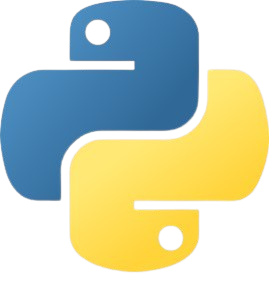

Portfolio
Java Projects
Click to view examples of Java projects I have completed during university and self-study projects I have undertaken, with links to Github repositories.
Occupational Specialism Project

The Occupational Specialism project was the final assessment of my T-Level course. It required me to develop a prototype based on a project brief and provide documentation to plan, design and explain the functionality of the prototype's code. The project brief was based around a hypothetical scenario with a client called Riget Zoo Adventures.
C# Windows Forms Programming Challenges
Click to view examples of my C# projects and a link to a Github repository that contains all of the C# (.NET, Windows Forms) programming challenges that I completed during college. I completed challenges based on classes, objects, loops, functions, statements, calculations, validation and exception.
Python Projects
Click to view examples of my Python Projects and links to Github repositories that contain all of the Python projects that I completed during my time at college. I completed employer-set-project-style scenarios and challenges based on dictionaries, functions, arrays, loops, sequencing and file reading/writing.